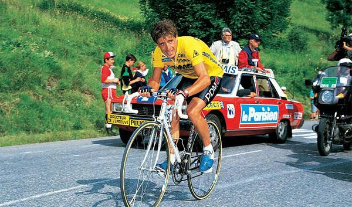

Pedro Delgado Robledo conocido también como Perico Delgado, es un exciclista español que fue profesional entre los años 1982 y 1994, durante los cuales logró un total de 49 victorias, entre las que destacaron un triunfo en la general final del Tour y dos en la de la Vuelta. En estas dos grandes rondas obtuvo además un total de nueve victorias de etapa, cinco en la Vuelta y cuatro en el Tour. Tras su retirada pasó a ejercer como comentarista de las grandes vueltas ciclistas por etapas en radio y televisión. En la actualidad es comentarista de ciclismo en el canal Teledeporte y, cuando RTVE lo decide puntualmente, también en La 1.
Miguel Induráin Larraya1(Villava, Navarra, 16 de julio de 1964) es un ciclista español, profesional entre 1984 y 1996. Fue ganador del Tour de Francia durante cinco años consecutivos (de 1991 a 1995) y del Giro de Italia en dos ocasiones consecutivas (1992 y 1993); fue además campeón del mundo contrarreloj (1995), campeón olímpico contrarreloj (1996)2 y poseedor del récord de la hora (1994) durante dos meses. Además, ganó varias vueltas por etapas de una semana y clásicas de un día, destacando entre ellas la Volta a Cataluña (1988, 1991 y 1992), la París-Niza (1989 y 1990), la Clásica de San Sebastián (1990), el Campeonato de España en Ruta (1992) y la Dauphiné Libéré (1995 y 1996),destacando sobremanera en las etapas contrarreloj para conseguir esas victorias, siendo simultáneamente uno de los mejores escaladores del panorama ciclista.El palmarés de Miguel Induráin le acredita como el mejor ciclista español de todos los tiempos y uno de los mejores deportistas de la historia del país, destacando por su capacidad de sacrificio y por su saber ganar.Ha recibido diversos premios en reconocimiento a su carrera deportiva, destacando el Premio Príncipe de Asturias de los Deportes en 1992.
Óscar Freire Gómez (Torrelavega, Cantabria, 15 de febrero de 1976) es un exciclista español que posee el récord de victorias en el Campeonato Mundial de Ciclismo en Ruta (3) junto con Alfredo Binda, Eddy Merckx, Rik Van Steenbergen y Peter Sagan. También poseyó el récord Ruban Jaune (2010). Actualmente es comentarista de ciclismo en la Cadena COPE con Óscar Pereiro, Samuel Sánchez y Matxin. Es considerado uno de los mejores esprínteres de la década, centrándose principalmente en victorias de etapas y clásicas. Ha sido tricampeón mundial en los años 1999, 2001 y 2004 y tres veces ganador de la Milán-San Remo en los años 2004, 2007 y 2010, ha conseguido triunfos nunca antes logrados por corredores españoles: el Giro de la Provincia de Lucca (2003), la Flecha Brabanzona (2005, 2006, 2007), la Vattenfall Cyclassics (2006), la Gante-Wevelgem (2008), el maillot verde del Tour de Francia (2008) y la París-Tours (2010); también fue el único en hacer pódium en la E3 Harelbeke (2012). Además, es el único español de toda la historia en hacer pódium en la ya desaparecida Copa del Mundo (2004) y el español con más grandes clásicas (12), seis de las cuales logró en pruebas diferentes (incluyendo el Mundial de Ciclismo en ruta). Participó en tres ediciones de los Juegos Olímpicos: Sídney 2000, Atenas 2004 y Pekín 2008. Fue baja en Londres 2012 por lesión y se retiró del ciclismo tras disputar el mundial de Valkenburg 2012.
Alberto Contador Velascon (Madrid, 6 de diciembre de 1982)2 es un exciclista español, profesional desde 2003 hasta 2017, y actualmente comentarista deportivo en Eurosport. Durante su carrera profesional, ha corrido en los equipos ONCE/Liberty Seguros, Discovery Channel, Astana, Saxo Bank Sungard/Tinkoff y Trek-Segafredo. Catalogado de leyenda,Contador es considerado como uno de los grandes vueltómanos de la historia del ciclismo.Destacaba como escalador, terreno donde era un especialista, y como contrarrelojista, modalidad en la que, sin ser un especialista, demostró defenderse bastante bien, consiguiendo 9 victorias de etapa, un cuarto puesto en la contrarreloj de los Juegos Olímpicos de Pekín 2008 y el Campeonato de España de Ciclismo en Ruta de Contrarreloj de 2009. En su palmarés, Contador tiene un total de 69 victorias como profesional;además, es ganador del UCI Word Ranking 2009.7 Entre sus victorias más importantes se encuentran 7 Grandes Vueltas (Giro de Italia 2008 y 2015, Tour de Francia 2007 y 2009 y Vuelta España 2008, 2012 y 2014) y 9 victorias de etapa en las mismas (3 etapas en el Tour de Francia y 6 etapas en la Vuelta a España), la París-Niza 2007 y 2010, la Vuelta al País Vasco 2008, 2009, 2014 y 2016, la Milán-Turín 2012, la Tirreno-Adriático 2014 y la Vuelta a Burgos 2016. Es el primer corredor español que ha conseguido ganar las tres Grandes Vueltas por etapas (Giro de Italia, Tour de Francia y Vuelta a España), hazaña que solo han conseguido los franceses Jacques Anquetil y Bernard Hinault, los italianos Felice Gimondi y Vincenzo Nibali, el belga Eddy Merckx y el británico Chris Froome.
Alejandro Valverde Belmonte (Las Lumbreras, Murcia, 25 de abril de 1980), más conocido deportivamente como Alejandro Valverde o Valverde, es un ciclista de ruta español, profesional desde 2002 y actual miembro del equipo español Movistar Team, de categoría UCI WorldTeam. Durante su carrera profesional ha corrido en los equipos Kelme-Costa Blanca e Illes Balears/Caisse d'Epargne/Movistar. Es un corredor completo y versátil, capaz de ganar tanto clásicas como vueltas por etapas. Destaca principalmente en la montaña, terreno en el que posee una gran explosividad que le permite desenvolverse con gran soltura en los puertos cortos y en las "cotas" de gran pendiente. En su palmarés, Valverde tiene un total de 127 victorias como profesional; además, es ganador del UCI ProTour 2006 y 2008 y UCI WorldTour 2014 y 2015. Entre sus victorias más importantes se encuentran el Campeonato Mundial en Ruta 2018, 1 Gran Vuelta (Vuelta a España 2009) y 17 victorias de etapa repartidas entre las tres Grandes (1 etapa en el Giro de Italia, etapas en el Tour de Francia y 12 etapas en la Vuelta España), la Flecha Valona 2006, 2014, 2015, 2016 y 2017, la Lieja-Bastoña-Lieja 2006, 2008 , 2015 y 2017, la Dauphiné Libéré 2008 y 2009, la Clásica de San Sebastián 2008 y 2014, la Volta a Cataluña 2009, 2017 y 2018, la Vuelta al País Vasco 2017 y la Vuelta a Burgos 2004 y 2009. Es uno de los pocos corredores en la historia en subirse al pódium en las tres Grandes Vueltas por etapas. A lo largo de su carrera ha disputado veintiocho Grandes Vueltas y ha conseguido clasificarse veinte veces entre los diez primeros, encabezando la lista histórica de 'top ten' en Grandes Vueltas por etapas. Con siete podios (oro en Innsbruck 2018, plata en Hamilton 2003 y Madrid 2005, y bronce en Salzburgo 2006, Valkenburg 2012, Florencia 2013 y Ponferrada 2014), Valverde es el ciclista con más medallas conseguidas en la historia de los mundiales en ruta.